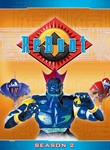

What is this site?
Stephen's Profile
Browser Extension
Stephen Klancher
Recent
Overall
Year Overview
Series
Lists
ReBoot
List contains: 47 items, 0.8 hours.
Seasons:
1
|
2
|
3
|
4
|
Title Search (4+ characters):
Group:
None
Example Group: Me and Stephen
Who's seen it:
No filter
Everyone
No One
Anyone
Anyone Has Not
Who's commented:
No filter
Everyone
No One
Anyone
Anyone Has Not
Netflix:
No Filter
Available for Instant Watch
Netflix Link Known
Netflix Link Unknown
Missing Data:
No Filter
Runtime
Season
Release Year (YYYY) or Decade (YYYx):
Sort:
Normal
Newest Episodes First
Episodes in Order
Recently Watched First
Watched in Order
Newest Releases First
Releases in Order
Stephen Klancher
...has seen 47
...has seen 0.8 hours
Timeline
Season 1
The Tearing (1994)
Airs on 1994-09-10
S1 - E1 of
ReBoot
Stephen Klancher
: SEEN
Racing the Clock (1994)
Airs on 1994-09-17
S1 - E2 of
ReBoot
Stephen Klancher
: SEEN
Quick and the Fed (1994)
Airs on 1994-09-24
S1 - E3 of
ReBoot
Stephen Klancher
: SEEN
Medusa Bug (1994)
Airs on 1994-10-08
S1 - E4 of
ReBoot
Stephen Klancher
: SEEN
The TIFF (1994)
Airs on 1994-12-31
S1 - E5 of
ReBoot
Stephen Klancher
: SEEN
In The Belly Of The Beast (1994)
Airs on 1994-12-03
S1 - E6 of
ReBoot
Stephen Klancher
: SEEN
The Crimson Binome (1994)
Airs on 1995-01-07
S1 - E7 of
ReBoot
Stephen Klancher
: SEEN
Enzo the Smart (1994)
Airs on 1994-12-17
S1 - E8 of
ReBoot
Stephen Klancher
: SEEN
Wizards, Warriors and a Word from Our Sponsor (1994)
Airs on 1994-12-24
S1 - E9 of
ReBoot
Stephen Klancher
: SEEN
The Great Brain Robbery (1994)
Airs on 1994-12-31
S1 - E10 of
ReBoot
Stephen Klancher
: SEEN
Talent Night (1995)
Airs on 1995-01-07
S1 - E11 of
ReBoot
Stephen Klancher
: SEEN
Identity Crisis (1) (1995)
Airs on 1995-01-14
S1 - E12 of
ReBoot
Stephen Klancher
: SEEN
Identity Crisis (2) (1995)
Airs on 1995-01-21
S1 - E13 of
ReBoot
Stephen Klancher
: SEEN

Season 2
Infected (1995)
Airs on 1995-08-31
S2 - E1 of
ReBoot
Stephen Klancher
: SEEN
High Code (1995)
Airs on 1995-09-07
S2 - E2 of
ReBoot
Stephen Klancher
: SEEN
When Games Collide (1995)
Airs on 1995-09-14
S2 - E3 of
ReBoot
Stephen Klancher
: SEEN
Bad Bob (1995)
Airs on 1995-09-21
S2 - E4 of
ReBoot
Stephen Klancher
: SEEN
Painted Windows (1995)
Airs on 1995-11-02
S2 - E5 of
ReBoot
Stephen Klancher
: SEEN
AndrAIa (1995)
Airs on 1995-11-09
S2 - E6 of
ReBoot
Stephen Klancher
: SEEN
Nullzilla (1) (1995)
Airs on 1995-12-27
S2 - E7 of
ReBoot
Stephen Klancher
: SEEN
Gigabyte (2) (1995)
Airs on 1995-12-27
S2 - E8 of
ReBoot
Stephen Klancher
: SEEN
Trust No One (3) (1996)
Airs on 1996-01-25
S2 - E9 of
ReBoot
Stephen Klancher
: SEEN
Web World Wars (4) (1996)
Airs on 1996-02-01
S2 - E10 of
ReBoot
Stephen Klancher
: SEEN
Season 3
To Mend and Defend (1997)
Airs on 1997-08-20
S3 - E1 of
ReBoot
Stephen Klancher
: SEEN
Between a Raccoon and a Hard Place (1997)
Airs on 1997-08-27
S3 - E2 of
ReBoot
Stephen Klancher
: SEEN
Firewall (1997)
Airs on 1997-09-03
S3 - E3 of
ReBoot
Stephen Klancher
: SEEN
Game Over (1997)
Airs on 1997-09-10
S3 - E4 of
ReBoot
Stephen Klancher
: SEEN
Icons (1997)
Airs on 1997-09-17
S3 - E5 of
ReBoot
Stephen Klancher
: SEEN
Where No Sprite Has Gone Before (1997)
Airs on 1997-09-24
S3 - E6 of
ReBoot
Stephen Klancher
: SEEN
Number 7 (1997)
Airs on 1997-10-01
S3 - E7 of
ReBoot
Stephen Klancher
: SEEN
The Episode with No Name (1997)
Airs on 1997-10-08
S3 - E8 of
ReBoot
Stephen Klancher
: SEEN
The Return of the Crimson Binome (1) (1997)
Airs on 1997-10-15
S3 - E9 of
ReBoot
Stephen Klancher
: SEEN
The Edge of Beyond (2) (1997)
Airs on 1997-10-22
S3 - E10 of
ReBoot
Stephen Klancher
: SEEN
Web Riders on the Storm (3) (1997)
Airs on 1997-10-29
S3 - E11 of
ReBoot
Stephen Klancher
: SEEN
Mousetrap (4) (1997)
Airs on 1997-11-05
S3 - E12 of
ReBoot
Stephen Klancher
: SEEN
Megaframe (1) (1998)
Airs on 1998-01-03
S3 - E13 of
ReBoot
Stephen Klancher
: SEEN
Showdown (2) (1998)
Airs on 1998-01-10
S3 - E14 of
ReBoot
Stephen Klancher
: SEEN
System Crash (3) (1998)
Airs on 1998-01-17
S3 - E15 of
ReBoot
Stephen Klancher
: SEEN
End Prog (4) (1998)
Airs on 1998-01-24
S3 - E16 of
ReBoot
Stephen Klancher
: SEEN
Season 4
Daemon Rising (1) (2001)
Airs on 2001-10-19
S4 - E1 of
ReBoot
Stephen Klancher
: SEEN
Cross Nodes (2) (2001)
Airs on 2001-10-10
S4 - E2 of
ReBoot
Stephen Klancher
: SEEN
What's Love Got To Do With It? (3) (2001)
Airs on 2001-10-26
S4 - E3 of
ReBoot
Stephen Klancher
: SEEN
Sacrifice (4) (2001)
Airs on 2001-11-02
S4 - E4 of
ReBoot
Stephen Klancher
: SEEN
My Two Bobs (1) (2001)
Airs on 2001-11-09
S4 - E5 of
ReBoot
Stephen Klancher
: SEEN
Life's a Glitch... (2) (2001)
Airs on 2001-11-16
S4 - E6 of
ReBoot
Stephen Klancher
: SEEN
Null-Bot of the Bride (3) (2001)
Airs on 2001-11-23
S4 - E7 of
ReBoot
Stephen Klancher
: SEEN
Crouching Binome, Hidden Virus (4) (2001)
Airs on 2001-11-30
S4 - E8 of
ReBoot
Stephen Klancher
: SEEN
Watched an episode not known by IMDb?
Season:
-
Episode:
Date:
Comment: